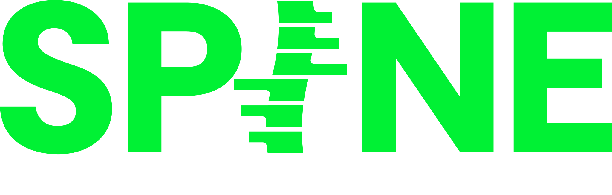

Merhaba,
Hepinizin de bildiği gibi çok yakın zamanda bir birleşme yaşadık. Bu birleşme sonucu en yüksek verimlilikle çalışabilmek için de organizasyonumuzu yedi ana fonksiyonda topluyoruz: Yönetim, İçerik, Yapım/Yayın ve İletişim, Operasyon, Ürün Yönetimiz, UI / UX ve Reklam Satış. Amacımız karmaşayı azaltmak olduğu için kimin neye karar verdiği, kimin kime destek olduğunu ilk bakışta herkes anlasın istiyoruz.
Aşağıda doğrudan bana rapor eden yöneticileri bulacaksınız. Her isme dokunarak rolün temel amacını, sorumluluklarını ve iletişim bilgilerini görebilirsiniz. Oradan da bana direkt rapor eden arkadaşlarımın ekiplerine ulaşabilirsiniz.
Her zaman olduğu gibi işlerimizi düzgün yapmaya devam edeceğimiz, yüksek verimli ve motivasyonlu bu yeni dönem hepimize hayırlı olsun.
Yeni öğrendiğim ve çok sevdiğim bir Adem abi sözüyle bitiriyorum:
"Tedbir, tanzim ve takip ricasıyla"
BURCIN
Aklına takılan her şeyi sorabilirsin — yapıyı birlikte oturtacağız. Bana doğrudan yaz ya da yöneticinle konuş.
{{ person.purpose }}
{{ d.text }}